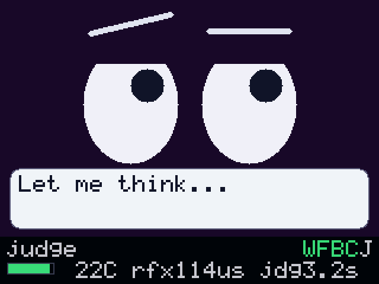
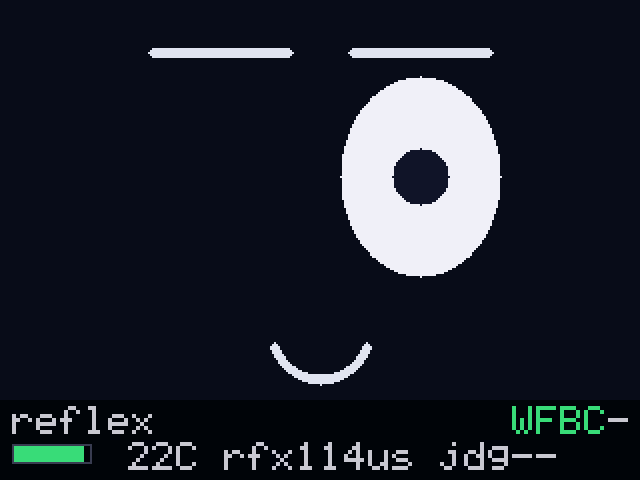
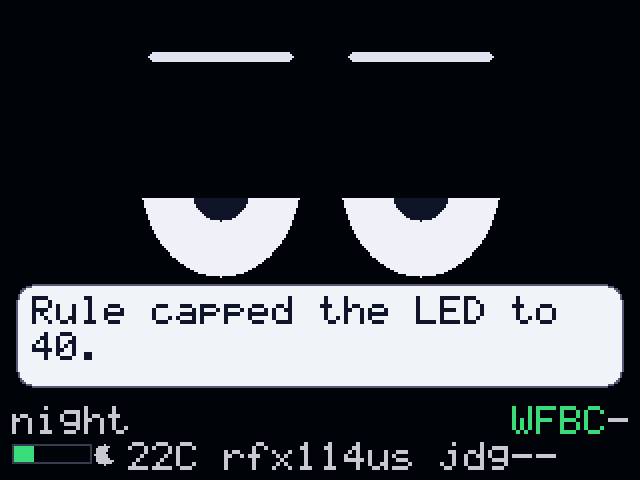
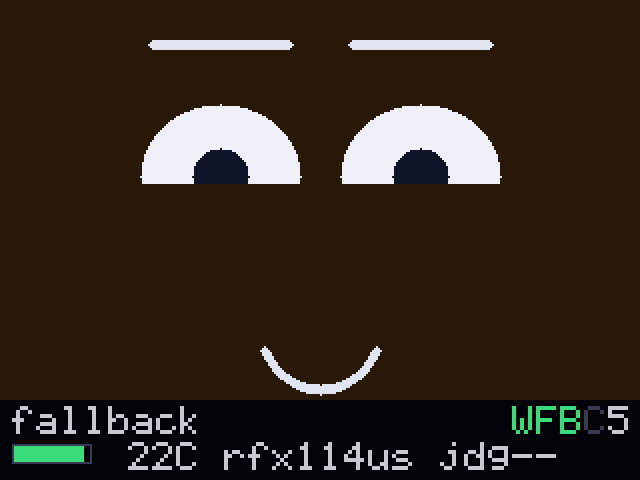
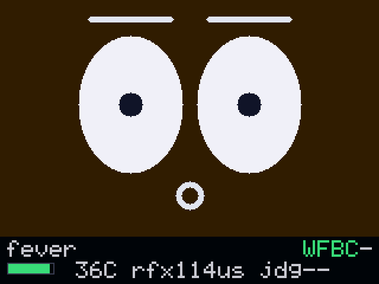
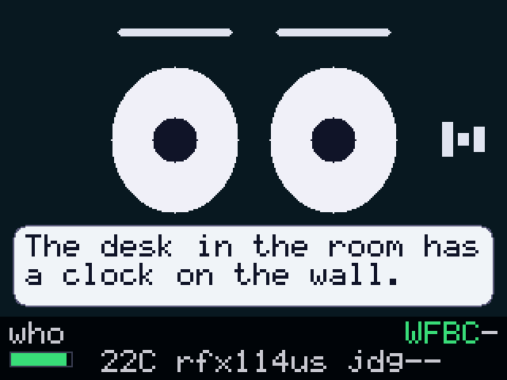
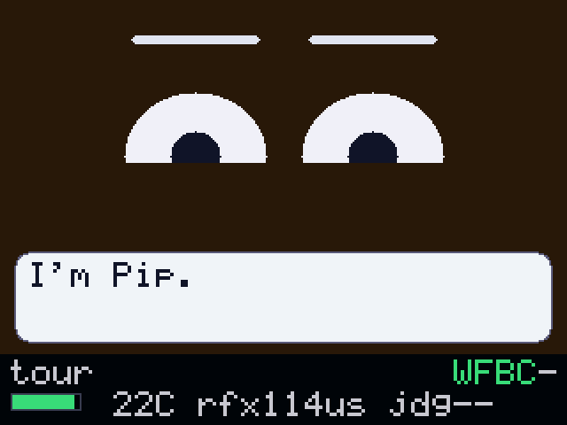

body
Pico 2 W
The face, the status strip, the speech bubble, the button, light and temperature. A framed UART link to the brain at 921600, with WiFi HTTP as the fallback when the wire goes quiet.
built on tiny_agent · four boards · MIT
Press Pip's button and it winks before you let go: a Rete rule on a Pi Zero, no tokens spent. Hold the button and it answers out loud seconds later, from a tiny_agent loop on a Jetson. The strip under the face says which one just spoke.

320x240 on the panel, rendered from the same C++ the Pico runs. The bottom strip is the argument: rfx what the last rule cost, jdg what the last model call cost, and J or 5 for which model answered.
press to wink, over HTTP
757ms
at the brain, body answering over WiFi
hold to spoken answer
9.0s
four of them the microphone window, Jetson Orin Nano
camera frame to sentence
2.6s
SmolVLM-500M on the Jetson, 1.0 s warm
Jetson resident, all three
4.09GB
text model, VLM and cortex, against a 6.5 GB budget
Measured 2026-08-23 on the named devices. The wire between the Pico and the Pi Zero has not been timed yet, so the press number above is the HTTP path, which is the slow one.
four boards
Reflexes are rules, judgment is an agent, and the two run on different hardware so nobody has to take the claim on trust. The body only ever shows, sounds and senses, which is why its face loop never waits on the LAN.
body
The face, the status strip, the speech bubble, the button, light and temperature. A framed UART link to the brain at 921600, with WiFi HTTP as the fallback when the wire goes quiet.
brain
Rete rules answer events with no model call at all. A tiny_agent loop wakes only on a held button. The scene director runs the demo. One binary, built on the Pi 5, deployed over SSH.
cortex
Ears and eyes: whisper.cpp on CUDA for the microphone, a small VLM for the camera, and Qwen2.5-3B-Instruct for the judgment itself. All three resident at once.
fallback mind and voice
Piper turns the answer into 16 kHz PCM that streams down the wire to the speaker. A second llama-server stands by, so killing the Jetson changes the latency and one letter on the HUD, not the behaviour.
the demo
Every scene is a script on the brain, started with one POST and reachable by name. The screens below are dumped from the same rendering code the Pico runs, so they are pixels rather than mockups.
scene 1
Pip asks for a press and waits six seconds for a real one before staging the press itself, which is what lets the same script run with nobody at the desk. The wink is a rule firing: no model, no tokens.
curl -X POST http://<brain>:8080/scene -d '{"name":"reflex"}'

scene 1, second beat
Hold the button and ask something out loud. Listening face, then thinking, then
the answer arrives spoken with the same words in the bubble. 9.0 s end to end on
2026-08-23, and the HUD carries both the time and the J that says
the Jetson answered.
curl -s http://<brain>:8080/log?n=30
scene 2
Cover the light sensor. The face goes sleepy, a moon lights next to the lux bar, and the agent asks for a bright red LED. The guardrail gives it 40 out of 255 and Pip says so out loud. That is the rule layer overruling the model, on camera.
curl -X POST http://<brain>:8080/scene -d '{"name":"night"}'

scene 3
The judgment layer is told to skip the Jetson for one answer. The cortex glyph
goes grey, mind reads 5, and the Pi 5 answers instead.
Pull the Jetson's power for the harder version; the screen looks the same.
curl -X POST http://<brain>:8080/scene -d '{"name":"fallback"}'

scene 4
A thumb on the RP2350 pushes it past 35 C and the temp.hot rule
fires: alert face, amber ground, red LED. Another one with no model anywhere
near it.
curl -X POST http://<brain>:8080/scene -d '{"name":"fever"}'

scene 5
Pip takes a frame off the webcam and says one sentence about what is in front of it. The bubble below is a real answer from 2026-08-23, not a caption somebody wrote for the screenshot.
curl -X POST http://<brain>:8080/scene -d '{"name":"who"}'

scene 6
Two minutes with nobody at the desk. Pip introduces each part in one sentence,
then plays reflex, night and who with every wait staged, and ends on "That's all
of me. Press my button any time." The brain boots straight into it with
--tour.
curl -X POST http://<brain>:8080/scene -d '{"name":"tour"}'

reflex against judgment
The point of splitting the two is that most of what a companion does never needs a model. Everything below came off the bench on 2026-08-23.
| Path | Where it runs | Measured |
|---|---|---|
| Press to wink, body on WiFi | Pi Zero 2 W rule, HTTP both ways | 757 ms |
| Press to wink, body on the wire | same rule, one UART frame | 114 µs |
| Hold to spoken answer | Jetson text model, Pi 5 voice | 9.0 s |
| Microphone window inside that | whisper base.en, CUDA | 4.5 s |
| Camera frame to one sentence | SmolVLM-500M, Jetson | 2.6 s |
| Text to 1.19 s of speech | Piper on the Pi 5 | 194 ms |
| Resident memory, three Jetson services | text model, VLM, cortex | 4.09 GB |
The two press numbers are the same rule with a different transport under it. The wire turns a TCP round trip into a rule match plus one framed UART write: 114 µs is the median rule time over the 2026-08-23 acceptance run (105 to 165 µs), and the whole event, rule included, stays under 330 µs at the brain. Method, raw output and the frames on this page live in the Pip repository.
where to start
Pip is MIT licensed like tiny_agent, and every part of it is documented next to the code that does the work.
the anatomy
README: the fleet table, the six steps from a press to a wink and from a hold to an answer, and the scene gallery with the command that starts each one.
the film
docs/demo-script.md: four health checks, seven shots in filming order, and a troubleshooting table keyed on what the status strip shows.
the contracts
PROTOCOL.md for the wire and the HTTP routes, brain/README.md for the endpoints and flags, and services/README.md for the cortex and voice, with the measurements behind every number here.
the hardware
hardware/: the
pin table, a pictorial and a WireViz harness, all generated from
pins.hpp and checked against it in CI.